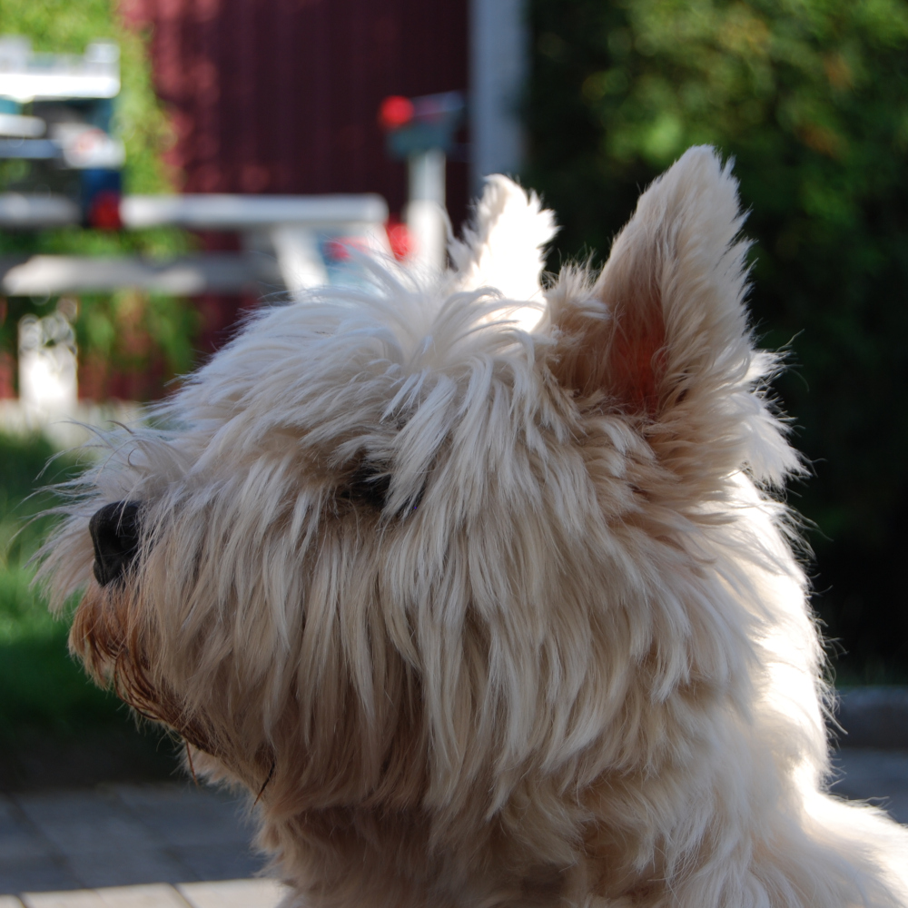

Il peut rendre les lettres å, ä et ö
Okay, i'll stop it with the French.
Hi! My name is Kasper Andersson. I'm interested in free and open source software 🖥️, languages 🌍, human and non-human animal rights ☮, photography 📸 and sometimes I play music 🎸.
I generally program in C or lisp, since many of the open source projects I like are developed with those languages (see Linux, Emacs). I also consider myself passable when it comes to writing in Python.
Web development hasn't generally been my forté, but I'm working on it and already self host some things on my Raspberry Pi, like a Git page and a Nextcloud instance. That's why I'm excited to start this course.
